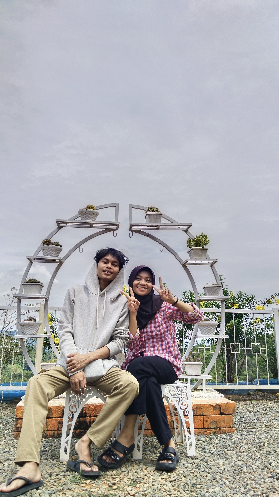
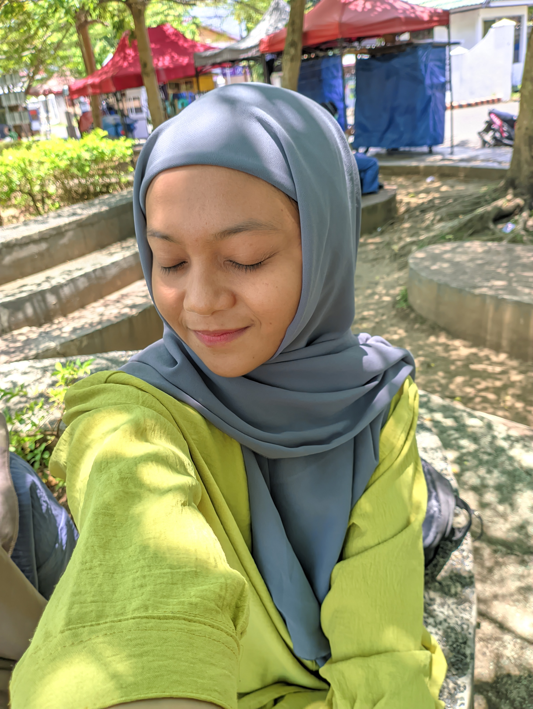

Hai, Cintaku! ❤
Selamat ulang tahun sayang hehe 💖
Ini ji bisa ku kasih kan ki, btw maaf lama baru jadi susah soalnya syangggg 😘

Cieee selamat panjang umur dan mudah rejekinya syggg, tidak kulupa ji ultah ta syggggku 💕

I Love You! ❤
Browser Anda tidak mendukung elemen audio.